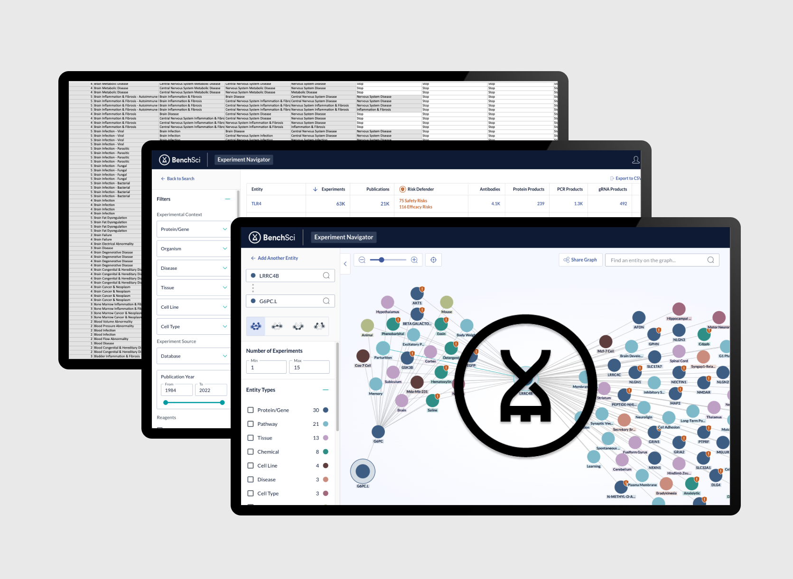
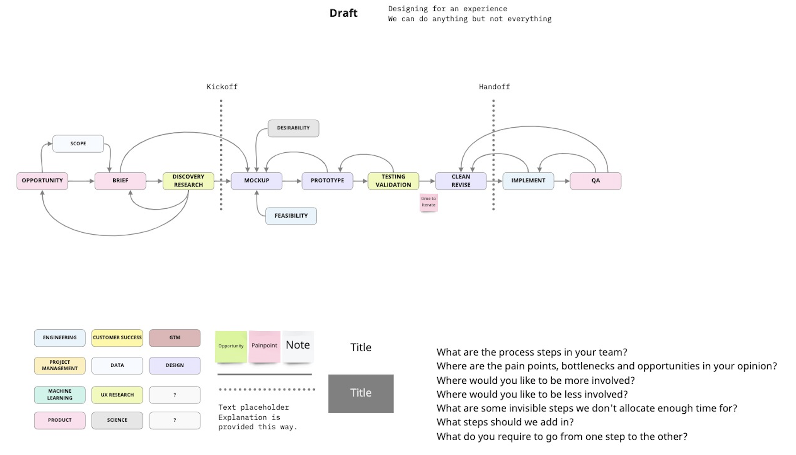
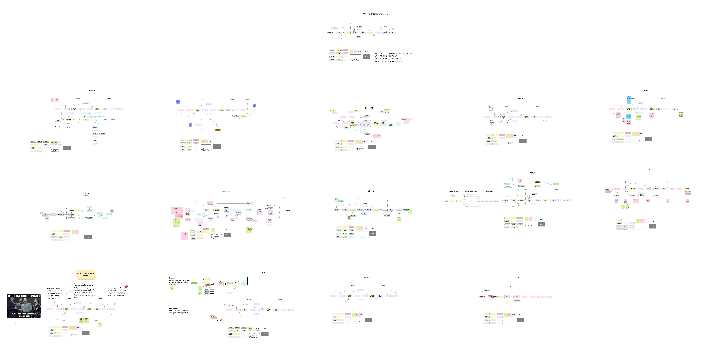
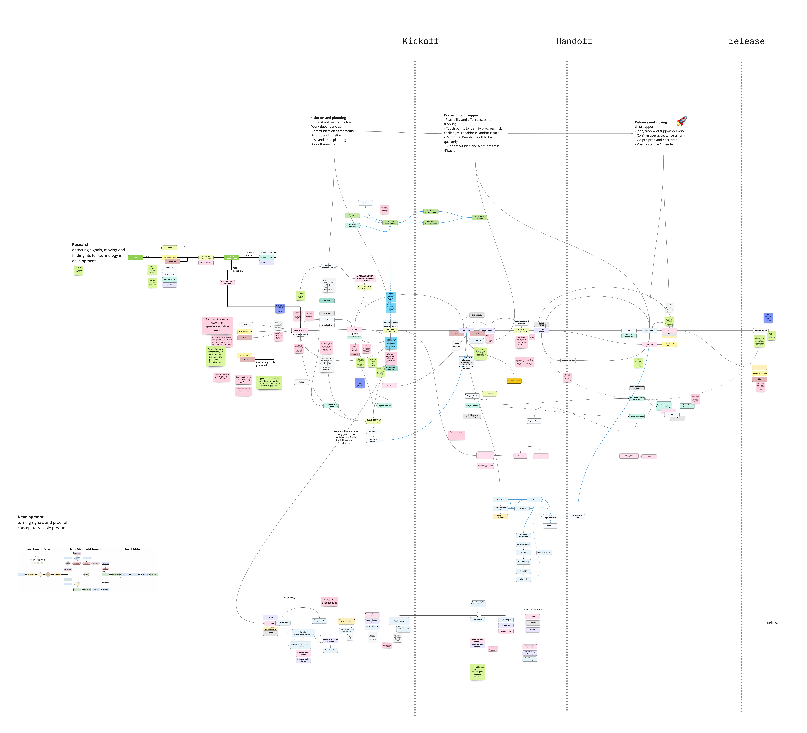
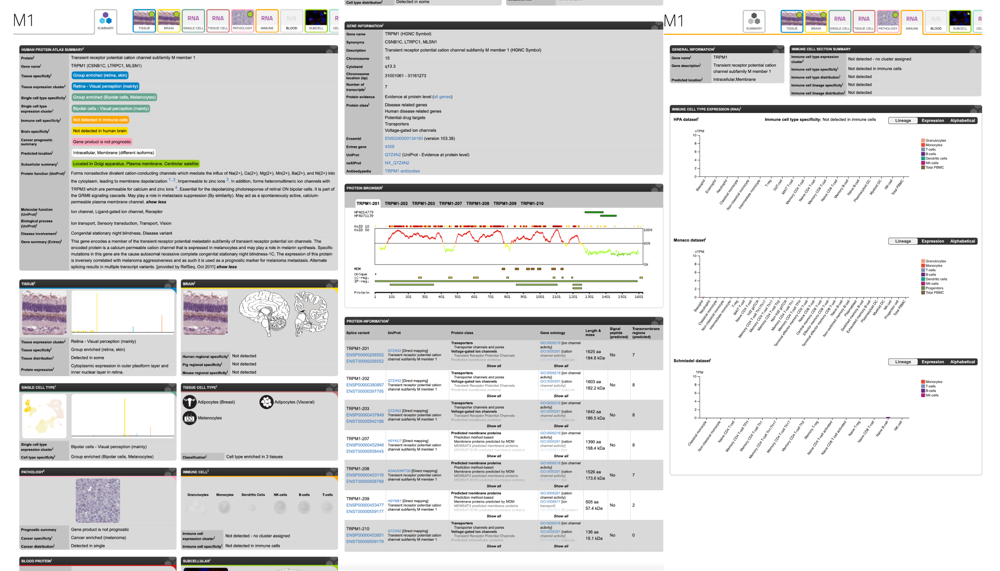
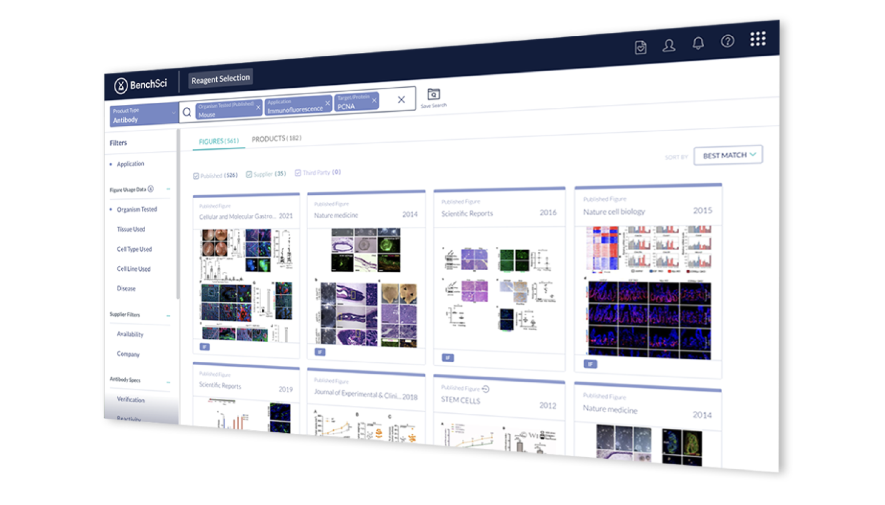
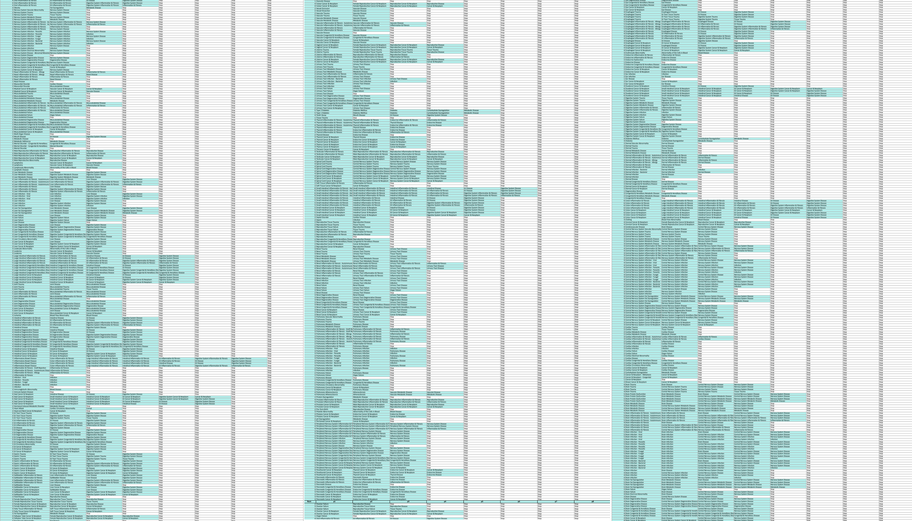

Overview

Lead designer for BenchSci Experiment Navigator, exponentially
increasing the speed and quality of life-saving research using
AI and entity mapping.
Shaped the initial version of the product, collaborating
with the research, science, and technical teams. Optimized processes,
harmonized cross-functional team members, and defined communication
guidelines.
Analyzed complex data, and found various creative ways to
visualize the data tailored to the defined user workflow steps at
the right moments.
Cross Team Collaboration


Visualized the product design team's workflow and used it as a template to facilitate a workshop with all members of our cross-functional team consisting of data scientists, scientists, designers, researchers, developers, managers, project managers, product managers, and enablement team members.

Combined the individual team member workflows to identify gaps, and miscommunications, visually show the volume of work each department completes, opportunities, and pain points. Wrote action items, and ran follow-up workshops to assign and complete action items. Initiated conversations to increase team productivity and address processes that lead to unnecessary iterations and/or throw-away work. Highlighted pain points such as the challenge of designing and developing data schemas and visualizations while they are still being worked on, challenged workflow, and processes orders.
Domain and Data Complexity

Many experiments are unnecessary duplicates due to a lack of visibility
into prior experiments. Even when an experiment seemingly succeeds, scientists are often unable
to replicate the results due to various factors. It isn’t scientists’ fault this happens; they
simply don’t have reliable access to the information that would enable them to prevent it.
BenchSci gathers, decodes and presents the most extensive collection of data from life
science experiments and vendor catalogs. In my role, I was often presented large amounts of
raw data and I worked on finding the best way to organize, prioritize, and represent the data.

For certain projects I had developed interactive proof of concepts
for our user research team to use during customer user sessions to get feedback on and find ideal
information architecture patterns. I had also created POCs and explored various different data visualization
tools, chart types and combination of text and shapes to find optimized way of representing the data.
Initially I had a steep learning curve since understanging the medical and pharmaceutical research methods,
processes and data was crucial to understanding user workflows and needs.
